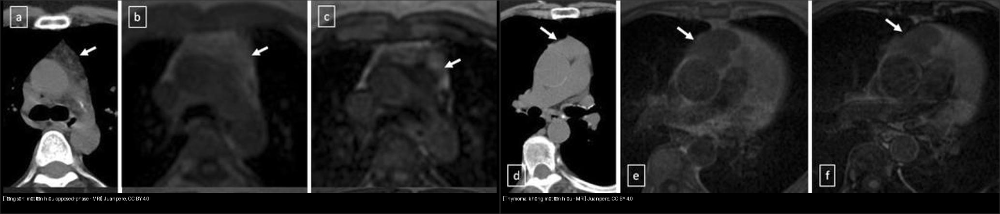
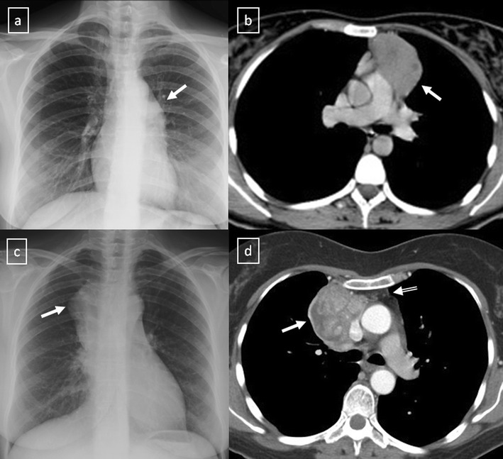

060 — Khối trung thất 3 khoang ITMIG / Mediastinal masses (ITMIG compartments)
Tags: pattern:khoi vung:trung-that score:ITMIG
Mức chắc chắn (certainty): tổng hợp y văn (literature synthesis) — nhóm tự biên từ y văn mở, chưa gắn ca nguyên văn đơn lẻ.
1. Tổng quan — 3 khoang ITMIG thay X-quang cổ điển
- ITMIG chia trung thất trên CT thành trước mạch máu (prevascular), tạng (visceral), cạnh sống (paravertebral) — thay phân loại X-quang trước/giữa/sau (sai số cao khi khối lớn tràn khoang).
- Quy tắc tuổi: > 40 tuổi + khối trước mạch nghĩ thymoma trước; trẻ + khối trước mạch nghĩ tăng sản/lymphoma/u mầm; mọi tuổi + khoang cạnh sống nghĩ u thần kinh trước.
- TẠI SAO chemical-shift phân biệt được tăng sản vs u: tuyến ức tăng sản còn mỡ vi thể xen kẽ → mất tín hiệu trên out-of-phase; u đặc không có mỡ vi thể → giữ nguyên tín hiệu. Ngưỡng: SII (signal intensity index) > 20% hoặc CSR (chemical-shift ratio) < 0,7 = tăng sản.
2. Gamut theo khoang
- Trước mạch (prevascular) — 4T: Thymoma, Teratoma (u quái), Thyroid (tuyến giáp), Terrible lymphoma + tăng sản, nang tuyến ức/màng tim.
- Tạng (visceral): hạch lymphoma/lao, nang phế quản (bronchogenic cyst — cạnh carina 52%), thực quản (co thắt/túi thừa/thoát vị hoành).
- Cạnh sống (paravertebral): u thần kinh (schwannoma, u hạch — rộng lỗ liên hợp, hình quả tạ/dumbbell), áp-xe, tụ máu, tủy ngoài tủy.
3. Bảng so sánh 5 thực thể
| Thực thể (entity) | Hình ảnh điển hình | Chốt vào (rule-in) | Chốt loại (rule-out) | Gợi ý xác nhận |
|---|---|---|---|---|
| Thymoma | > 40 tuổi, khối đa cung trước mạch, nhược cơ (MG), hoại tử/vôi hóa trong u | Tuổi + MG + khối đặc không mất tín hiệu chemical-shift | Trẻ + mất tín hiệu out-of-phase → tăng sản | CT cản quang + Masaoka-Koga sau mổ |
| Tăng sản tuyến ức | Trẻ, tuyến to lan tỏa bờ nhẵn, sau stress/hóa trị (rebound > 50%) | SII > 20% / CSR < 0,7 trên chemical-shift | Khối khu trú + không mất tín hiệu → u | MRI chemical-shift, theo dõi teo dần |
| U quái (teratoma) | Trước mạch, mỡ đại thể −40…−120 HU + vôi hóa/răng + dịch trong cùng khối | Mỡ + vôi hóa + dịch trong 1 khối | Đặc thuần không mỡ/vôi → thymoma/lymphoma | AFP/β-hCG (u mầm ác) |
| Lymphoma | Trẻ, khối lớn bao bọc mạch (vessel encasement) mà không tắc lòng | Bao mạch không tắc + hạch nhiều nhóm + tuổi trẻ | Xâm lấn/tắc mạch → thymoma xâm lấn/K giáp | Sinh thiết hạch, PET đánh giá |
| U thần kinh | Cạnh sống, rộng lỗ liên hợp, dumbbell, vôi hóa mịn | Khoang cạnh sống + rộng lỗ liên hợp | Trước mạch → không phải u thần kinh | MRI tủy (xâm lấn ống sống?) |

Trái: tăng sản — mất tín hiệu out-of-phase (panel c). Phải: thymoma B2 — giữ nguyên tín hiệu (panel f). Nguồn: Juanpere et al., CC BY 4.0. Ảnh ghép letterbox (panel đã cắt có ghi rõ).4. Protocol + flowchart khoang
- CT cản quang ngực: vẽ bản đồ mạch (encasement vs xâm lấn), HU mỡ/nước/vôi hóa, hạch.
- MRI chemical-shift (in/out-of-phase): mọi khối tuyến ức trẻ/không điển hình — SII/CSR như mục 1.
- DWI: ADC u ác thấp hơn lành (tham khảo, không chốt một mình).
flowchart TD
A[Khối trung thất trên CT] --> B{Khoang ITMIG?}
B -->|Trước mạch| C{Tuổi + thành phần?}
B -->|Cạnh sống| D[U thần kinh? Rộng lỗ liên hợp]
B -->|Tạng| E[Hạch/nang phế quản/thực quản]
C -->|">40 + đặc"| F[Thymoma? MG + chemical-shift]
C -->|Trẻ + lan tỏa| G[Tăng sản? SII>20%]
C -->|Mỡ+vôi hóa+dịch| H[U quái]
5. Cạm bẫy
- Rebound sau hóa trị/xạ trị/bỏng: tuyến to > 50% sau stress — đừng đọc tái phát; chemical-shift + theo dõi teo dần.
- Tuyến ức trẻ bình thường: hình tam giác/bầu, bờ nhẵn — đừng gọi u.
- Nang màng tim góc tâm hoành phải: nang nước 0–20 HU, không ngấm thuốc — đừng gọi u đặc.
- ĐMC quặt, thực quản giãn: giả khối cạnh sống/tạng — uống cản quang/thuốc sủi khi nghi thực quản.
6. Tự lượng giá — Blind Quiz
Ca 1 — Nữ 43 tuổi, khối trước mạch. So sánh 2 nửa dưới đây, kết luận trước.
- Hỏi: nửa nào mất tín hiệu out-of-phase? Mỗi nửa là tăng sản hay u? Ngưỡng số?
Bấm để hiện đáp án
- Trái (a–c): mất tín hiệu out-of-phase → tăng sản (SII > 20%). Phải (d–f): giữ nguyên tín hiệu → thymoma B2.
- Nguồn: Juanpere et al., Fig. 17, CC BY 4.0.
Ca 2 — Nữ 33 tuổi, nhược cơ, X-quang mờ rốn phổi trái:

Bấm để hiện đáp án
- Thymoma B1 giai đoạn II: hilum overlay X-quang + khối trước mạch CT ở BN nhược cơ — bộ 3 tuổi + MG + vị trí.
- Nguồn: Juanpere et al., Fig. 18, CC BY 4.0.
Bài liên quan chéo
- 001 – Tổng quan hệ Ngực
- 010 – Giải phẫu ngực cắt lớp (đường-dải trung thất)
Không dùng để chẩn đoán độc lập khi chưa có người hướng dẫn.